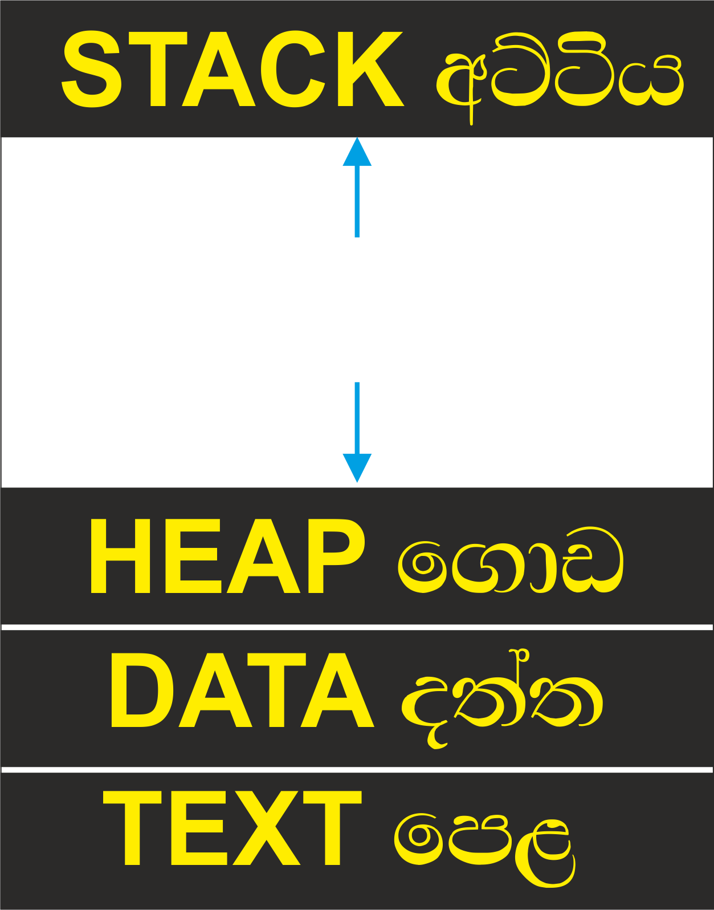
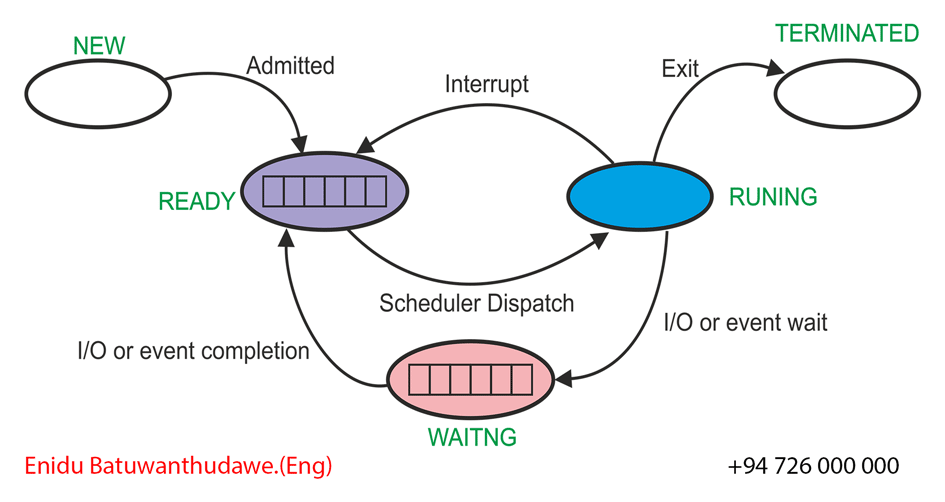

A process is the basic unit of execution in a computer system.
A process is a program that is currently being executed.
A process is an active instance of a program. Its execution progresses sequentially from one instruction to the next.
It contains the program code and its current activity.
Depending on the operating system (OS), a process may contain one or more threads that execute instructions.
After a process is created, the operating system performs the following tasks:
• Loads the process into the main memory.
Process in Main Memory

Stores temporary data such as function parameters, return addresses and local variables.
Memory dynamically allocated to a process during execution.
Stores global and static variables.
Contains the executable program instructions and the current execution state represented by the processor registers.
A computer program is a collection of instructions that performs a specific task when executed by a computer. A process is an executing instance of a program.
A part of a computer program that performs a specific task is called an algorithm. A collection of programs, libraries and related data is known as software.

The initial state of a process immediately after it is created.
After the operating system assigns the process to the CPU, the processor executes its instructions.
If the process must wait for a resource such as user input, a file, or an I/O operation, it enters the waiting state.
When a process finishes execution or is terminated by the operating system, it enters the terminated state and is removed from memory.
The Process Control Block (PCB) is a data structure maintained by the operating system for every process. Each PCB is identified using a unique Process ID (PID) and stores all information required to manage the process.
The current state of the process, such as New, Ready, Running, Waiting or Terminated.
Defines the permissions required to access system resources.
A unique identifier assigned to each process by the operating system.
A register that points to the top of the process stack.
The Program Counter (PC) stores the address of the next instruction to be executed.
Stores the current values of processor registers.
Information used to manage the process memory.
Information used by the CPU scheduler.
Stores information about files and input/output devices used by the process.